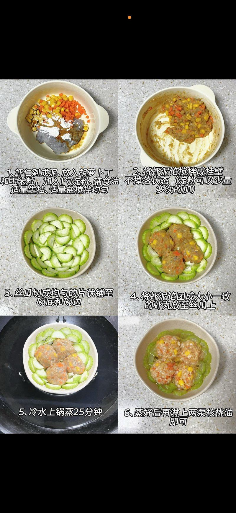
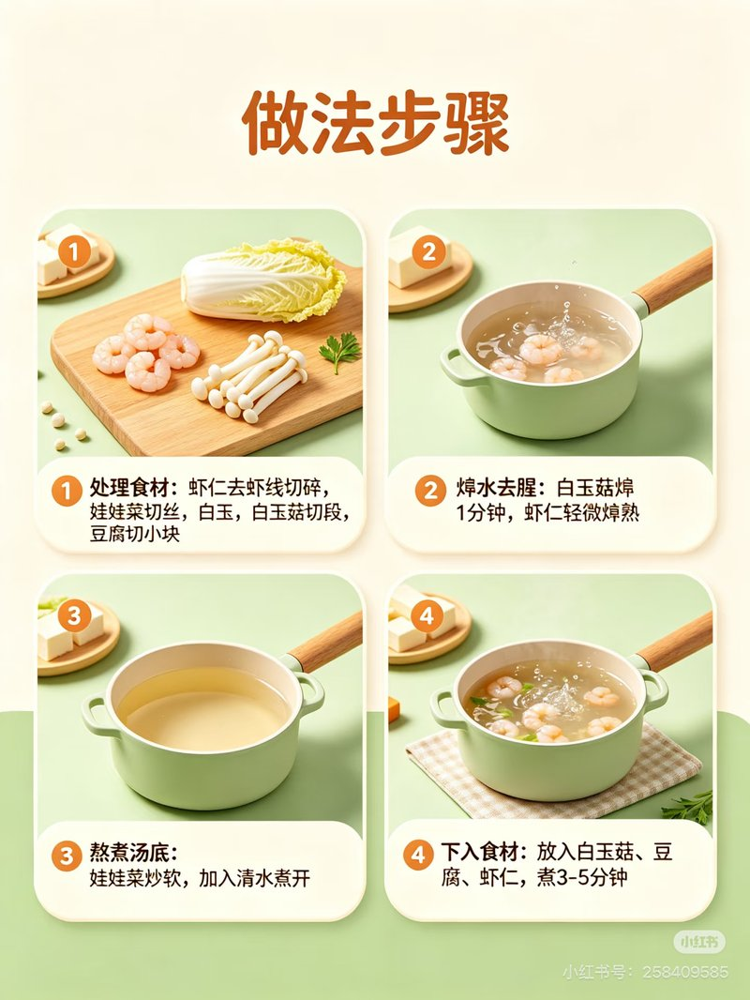
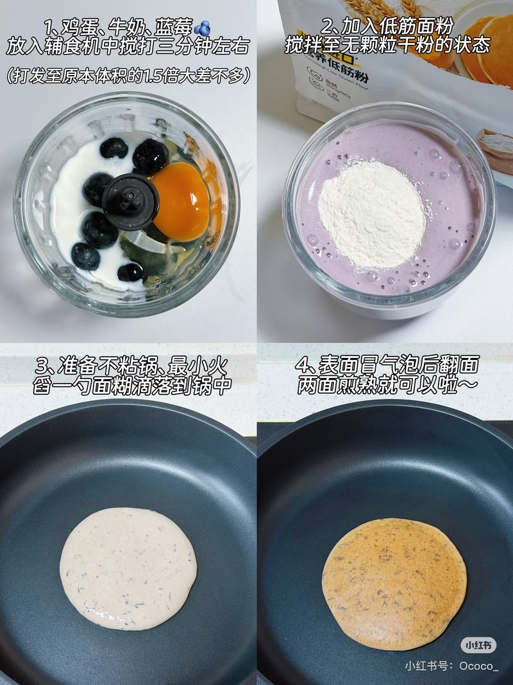
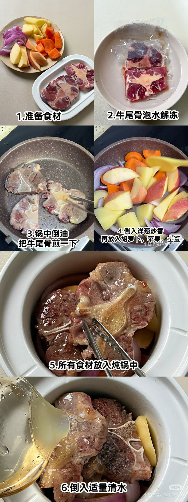
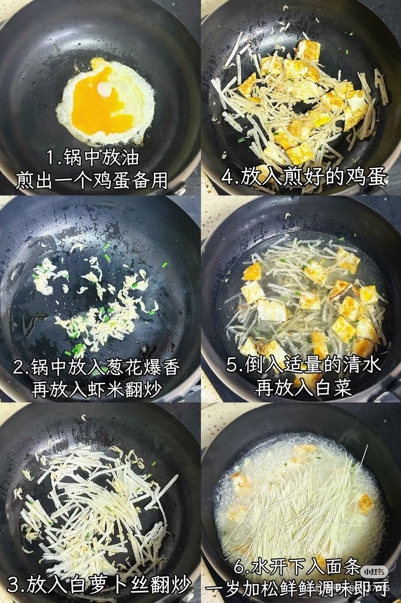
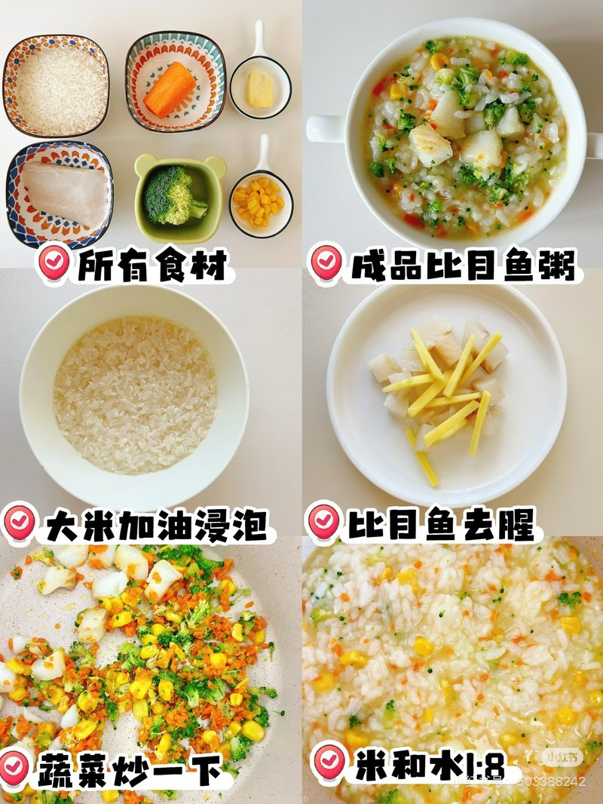

周一 10.12
南瓜小米糊 · 丝瓜玉米蒸虾丸 · 奶酪土豆饼
早餐
南瓜小米糊 + 香蕉鸡蛋饼
碳水 小米约 10–12g + 少量面粉蔬菜/果 南瓜约 15–20g + 香蕉蛋白 全蛋脂肪 少量油
食材
- 小米约 10–12g
- 老南瓜约 15–20g，切小块
- 香蕉适量压泥
- 鸡蛋 1 个（全蛋）
- 面粉少量 + 少量油；不加盐糖
做法
- 小米与南瓜加水煮至软烂，南瓜压碎拌匀成糊。
- 全蛋打散，加香蕉泥、少量面粉调成糊，少油小火摊成小饼，两面煎熟。
- 饼切条手抓；糊放温勺喂。不加盐糖。
小米约 10–12g、南瓜约 15–20g；香蕉鸡蛋饼用全蛋。不加盐糖酱油。
午餐
丝瓜玉米蒸虾丸 + 水煮生菜 + 软饭约 20–25g
碳水 软饭约 20–25g + 淀粉蔬菜 丝瓜 + 胡萝卜 + 玉米 + 生菜蛋白 虾泥脂肪 辅食油/核桃油约 5g
食材
- 鲜虾去壳去虾线，剁成虾泥
- 胡萝卜丁、玉米粒适量
- 淀粉少许 + 辅食油适量搅粘
- 丝瓜切片铺碗底
- 生菜适量水煮软
- 软米约 20–25g
- 出锅核桃油/辅食油约 5g；不加盐、生抽
做法
- 虾泥 + 胡萝卜丁 + 玉米 + 淀粉 + 辅食油搅至粘墙（不加盐生抽）。
- 丝瓜片铺碗底/碗壁，虾糊搓丸摆上。
- 冷水上锅蒸约 25 分钟至全熟。
- 出锅淋核桃油/辅食油约 5g；配水煮软生菜与软饭约 20–25g。

做法步骤参考图（图源小红书）；用量以上面蕉蕉分量为准，不加盐糖酱油。虾务必全熟；图源步骤含盐生抽，蕉蕉版一律不加。主餐油约 5g，软饭约 20–25g（体重平台期微调）。
下午餐
奶酪土豆饼（奶酪半块）+ 猕猴桃
碳水 土豆 + 少量面粉水果 猕猴桃蛋白 蛋黄 + 奶酪半块脂肪 少量油
食材
- 土豆适量，蒸软压泥
- 蛋黄 1 个（或全蛋，按食量）
- 奶酪半块，切碎
- 面粉少量、葱花少许
- 猕猴桃适量，去皮切小块
- 少量油；不加盐
做法
- 土豆蒸软压泥，加蛋黄、奶酪碎（半块）、面粉、葱花拌匀成稠糊。
- 少油小火摊成小饼，两面煎熟，切条手抓。
- 猕猴桃去皮切小块或压泥同餐。
- 不加盐、酱油、生抽。
奶酪一般半块。本餐无强制配图（未找到清晰奶酪土豆饼步骤图，按文字做法即可）。
早餐
鸡蛋水饼 + 玉米燕麦胚芽米粥
碳水 面粉 + 胚芽米 + 燕麦 + 玉米蛋白 全蛋脂肪 少量油
食材
- 鸡蛋 1 个（全蛋）
- 面粉少量 + 温水适量
- 胚芽米约 8–10g
- 即食燕麦约 5g
- 玉米粒适量
- 少量油；不加盐糖
做法
- 全蛋打散加温水、面粉调稀糊，少油小火摊薄水饼，两面熟透，切条。
- 胚芽米先煮软，下燕麦与玉米再煮片刻成粥。
- 不加盐糖。
水饼须熟透；粥可压碎调稀。
午餐
苹果洋葱奶酪牛肉饼（奶酪半块）+ 软饭约 20–25g + 水煮西兰花
碳水 软饭约 20–25g + 淀粉蔬菜 洋葱 + 西兰花水果 苹果（熟）蛋白 牛肉馅 + 奶酪半块
食材
- 牛肉馅约 40–50g
- 苹果适量切丁、洋葱切丁
- 奶酪半块
- 淀粉少许 + 辅食油约 5g
- 西兰花适量焯/水煮软
- 软米约 20–25g；不加盐
做法
- 苹果洋葱丁 + 牛肉馅 + 奶酪半块 + 淀粉 + 辅食油搅打上劲。
- 模具压饼，少油小火两面煎熟（切开无粉红）。
- 西兰花水煮/焯至软，切小。
- 配软饭约 20–25g。不加盐。
牛肉全熟；苹果入馅增湿软。软饭约 20–25g，主餐油约 5g。
下午餐
玉米馒头 + 娃娃菜虾仁海鲜菇豆腐汤
碳水 玉米馒头蔬菜 娃娃菜 + 海鲜菇蛋白 虾仁 + 豆腐脂肪 少量
食材
- 玉米馒头 1 个（约 15–20g）
- 鲜虾仁约 20–25g，去虾线切丁
- 娃娃菜约 30–40g，撕小
- 海鲜菇约 20–25g，切段
- 嫩豆腐约 25–30g 切小丁
- 少量油；不加盐
做法
- 虾去虾线切丁；娃娃菜撕小；海鲜菇切段；豆腐切丁。
- 海鲜菇焯约 1 分钟；虾焯至变色捞出。
- 少油炒软娃娃菜，加水煮开。
- 下菇、豆腐、虾再煮 3–5 分钟至虾全熟；汤里不加盐、酱油、生抽。
- 玉米馒头撕小块手抓。

做法步骤参考图（图源小红书）；用量以上面蕉蕉分量为准，不加盐糖酱油。虾务必全熟；豆腐选嫩易咽；海鲜菇焯透煮软。不加盐。
早餐
番茄鸡蛋面（胡萝卜刻小花点缀，无盐）
碳水 面条蔬菜 番茄 + 胡萝卜小花蛋白 全蛋脂肪 少量油
食材
- 面条适量煮软
- 鸡蛋 1 个
- 番茄适量去皮切碎
- 胡萝卜刻小花点缀
- 少量油；不加盐、酱油、生抽
做法
- 少油炒番茄出汁，倒入打散蛋液炒熟。
- 拌入煮软面条；胡萝卜刻小花焯软点缀。
- 全程不加盐糖酱油。生日快乐小装饰仅点缀。
农历生日早餐；无盐无酱油，胡萝卜小花只作点缀。
午餐
青菜蒸饭 + 肉末茄子（饭约 20–25g）
碳水 软饭约 20–25g蔬菜 青菜 + 茄子蛋白 猪肉末脂肪 辅食油约 5g
食材
- 软米约 20–25g，可拌青菜碎蒸/焖
- 猪肉末约 40–45g
- 茄子约 40–50g 切小丁蒸软
- 葱姜少许；辅食油约 5g；不加盐
做法
- 青菜焯软切碎，与米加水蒸/焖成软饭约 20–25g。
- 少油下肉末炒至变色全熟，下蒸软茄子丁翻匀，出锅可滴辅食油约 5g。
- 不加盐、酱油、生抽。
肉末务必全熟；茄子蒸软易咽。饭约 20–25g。
下午餐
酸奶巴斯克蛋糕（小块）
碳水 玉米淀粉蛋白 鸡蛋 + 宝宝酸奶脂肪 少量（酸奶）水果味 宝宝草莓香蕉酸奶自带
食材
- 宝宝草莓香蕉酸奶适量
- 鸡蛋 1 个
- 玉米淀粉适量
- 不放糖（甜味来自宝宝酸奶本身）
做法
- 宝宝草莓香蕉酸奶 + 蛋 + 玉米淀粉拌匀入模。
- 烤箱/空气炸至中心全熟、表面微上色。
- 放凉后只给一小块；不放糖、不加盐。
新做法·酸奶巴斯克：无糖，只用宝宝酸奶的天然甜；生日下午小块即可。本页非医疗建议。
早餐
黑芝麻核桃米糊 + 小馒头
碳水 米 + 小馒头蛋白 —脂肪 黑芝麻 + 核桃
食材
- 大米或小米约 10–12g
- 熟黑芝麻碾碎少许
- 核桃少量
- 小馒头 1–2 个
做法
- 米煮软，加黑芝麻与核桃打成细糊，调稀。
- 小馒头撕小块手抓。
- 不加糖；芝麻核桃须碾细防呛。
糊要细、无颗粒；不加糖。
午餐
三文鱼时蔬烩饭（三文鱼约 40–50g，饭约 20–25g，油约 5g）
碳水 软饭约 20–25g蔬菜 时蔬（胡萝卜/西兰花/玉米等）蛋白 三文鱼约 40–50g脂肪 DHA + 辅食油约 5g
食材
- 三文鱼约 40–50g，去皮去刺切小丁
- 软米约 20–25g
- 时蔬丁（胡萝卜、西兰花、玉米等）适量
- 辅食油约 5g；不加盐、任何调味
做法
- 少油下三文鱼丁炒至全熟变色，下时蔬丁翻软。
- 与软饭约 20–25g 轻轻烩匀，出锅补辅食油约 5g。
- 仔细确认无刺；不加盐、酱油、生抽。
三文鱼必须全熟去刺；饭约 20–25g，油约 5g。
下午餐
牛肉小馄饨 + 小油菜约 25–30g
碳水 馄饨皮蔬菜 小油菜约 25–30g蛋白 牛肉馅（无盐自包）脂肪 少量
食材
- 牛肉馅无盐自包（个数按蕉蕉食量）
- 小油菜约 25–30g
- 清水；汤里不加盐/酱油/紫菜虾皮
做法
- 自包牛肉小馄饨下开水，浮起后再煮 2–3 分钟，切开确认全熟。
- 小油菜焯软切碎。
- 全程不加盐、酱油、生抽。市售含盐馄饨不选。
本周周四下午牛肉小馄饨（实吃）；个数按食量，无盐自包。
早餐
蓝莓松饼（2–3 片）+ 宝宝酸奶一小份
碳水 低筋面粉约 15–20g水果 蓝莓约 20–25g蛋白 蛋约 1/2–1 + 宝宝酸奶脂肪 配方奶约 30ml + 少量油
食材
- 蓝莓约 20–25g
- 鸡蛋约 1/2–1 个
- 配方奶约 30ml
- 低筋面粉约 15–20g
- 宝宝酸奶一小份
- 少量油；不加盐糖
做法
- 蛋、配方奶、蓝莓入辅食机搅打约 3 分钟至体积约 1.5 倍。
- 加入低筋面粉搅拌至无干粉颗粒。
- 不粘锅最小火，舀一勺面糊摊成 2–3 片；表面冒泡后翻面，两面煎熟。
- 配宝宝酸奶一小份；不加盐糖。

做法步骤参考图（图源小红书）；用量以上面蕉蕉分量为准，不加盐糖酱油。新做法·蓝莓松饼：蓝莓约 20–25g、蛋约 1/2–1、配方奶约 30ml、低筋粉约 15–20g，做 2–3 片。图源分量可作参考，以蕉蕉分量为准。
午餐
清炖牛尾骨时蔬（洋葱胡萝卜苹果土豆）+ 软饭约 20–25g
碳水 软饭约 20–25g + 土豆蔬菜/果 洋葱 + 胡萝卜 + 苹果蛋白 牛尾（软烂剔骨）脂肪 汤油 + 可补辅食油约 5g
食材
- 牛尾骨适量（可先泡水解冻）
- 洋葱切片少许
- 胡萝卜切块
- 苹果切块（带皮可，喂前确认软烂）
- 土豆切块
- 少量油；清水；不加盐、酱油、生抽
- 软米约 20–25g
做法
- 牛尾骨泡水解冻；少油下锅把牛尾骨煎一下至表面变色。
- 倒入洋葱炒香，再放入胡萝卜、苹果、土豆翻匀。
- 所有食材放入炖锅，倒入适量清水，小火炖至牛尾软烂、蔬果软透。
- 肉剔骨后撕碎/切小；蔬果压软或切小；汤底不加盐。可补辅食油约 5g。
- 配软饭约 20–25g；汤可少许拌饭。

做法步骤参考图（图源小红书）；用量以上面蕉蕉分量为准，不加盐糖酱油。牛尾务必软烂剔骨再喂；汤底无盐。步骤跟小红书，调味按家里无盐无酱油改写。
下午餐
时蔬奶酪燕麦烘蛋（奶酪半块）
碳水 燕麦蔬菜 时蔬丁蛋白 全蛋 + 奶酪半块脂肪 少量
食材
- 鸡蛋 1 个
- 即食燕麦约 8–10g
- 奶酪半块切碎
- 时蔬丁（胡萝卜/西兰花/菠菜等）适量焯软
- 不加盐
做法
- 蛋打散，拌入燕麦、奶酪碎、时蔬丁。
- 倒入耐烤模具，烤箱/空气炸烤至表面凝固、中心全熟（烘蛋）。
- 放温切小块；不加盐糖酱油。
新做法·烘蛋：烤箱/空气炸至全熟凝固；奶酪半块。中心无流心再喂。
早餐
煎蛋萝卜鲜汤面
碳水 面条蔬菜 白萝卜丝 + 白菜蛋白 煎蛋 + 少量虾米（可选）脂肪 少量油
食材
- 鸡蛋 1 个
- 葱花少许；少量虾米（可选）
- 白萝卜丝适量
- 白菜适量
- 面条适量
- 清水；不加松鲜鲜/盐/酱油
做法
- 少油煎蛋至全熟，取出切小块备用。
- 葱花爆香，可选下虾米翻炒，下白萝卜丝翻炒。
- 倒入清水，下白菜，水开下面条；放入煎蛋块。
- 一岁内不加松鲜鲜、盐、酱油、生抽。

做法步骤参考图（图源小红书）；用量以上面蕉蕉分量为准，不加盐糖酱油。图源步骤写「一岁加松鲜鲜」——蕉蕉版一律不加任何调味。虾米可选。
午餐
葱油蛏子（少量试几个，首次引入贝类）+ 牛肉时蔬焖饭（牛肉约 30g）
碳水 焖饭内软米约 20–25g蔬菜 胡萝卜/西葫芦/口蘑等切碎（入焖饭）蛋白 牛肉约 30g（主）+ 蛏子少量试吃脂肪 辅食油约 5g（葱油合计）
食材
- 牛肉约 30g，切小丁/末
- 软米约 20–25g（入焖饭，不另配软饭）
- 时蔬切碎：胡萝卜、西葫芦、口蘑等适量（青菜改入焖饭，不另配）
- 蛏子少量（试几个），吐沙洗净；全熟去壳切小
- 葱花少许；辅食油约 5g 总计做葱油；不加盐、酱油、生抽
做法
- 蛏子吐沙洗净，煮/蒸至全熟开口，去壳，切小块确认无沙；本餐只给少量试几个。
- 少油葱花微香，拌入蛏子肉；葱油与整餐辅食油合计约 5g，不加盐酱油。
- 牛肉丁/末炒至全熟变色，下时蔬碎翻软，加软米约 20–25g 与适量水焖成牛肉时蔬焖饭（主食在焖饭里，不另配软饭/青菜）。
- 蛏子少量与焖饭同餐；仔细确认无沙无硬壳。观察 2–3 天过敏/肠胃反应。
蛏子首次少量试：只试几个，全熟去壳切小；主蛋白为牛肉约 30g，主食为焖饭内软米约 20–25g（不另配软饭/青菜）。观察 2–3 天过敏/肠胃反应。本页非医疗建议。
下午餐
比目鱼蔬菜粥（米约 15–20g，水约 1:8，油约 5g）
碳水 大米约 15–20g蔬菜 胡萝卜 + 西兰花 + 玉米蛋白 比目鱼脂肪 辅食油约 5g
食材
- 大米约 15–20g（可加油浸泡）
- 比目鱼适量，切小块，姜去腥
- 胡萝卜、西兰花、玉米切碎
- 水约 1:8；辅食油约 5g；不加盐
做法
- 大米可加油浸泡；比目鱼切小块加姜去腥。
- 蔬菜与鱼可先略炒，再与米按约 1:8 加水煮成粥。
- 鱼刺仔细剔净；出锅油约 5g。不加盐。

做法步骤参考图（图源小红书）；用量以上面蕉蕉分量为准，不加盐糖酱油。米约 15–20g、水约 1:8、油约 5g；比目鱼刺务必剔净。
早餐
花生黑米山药米糊 + 小馒头（花生打细）
碳水 黑米 + 山药 + 小馒头蛋白 花生（打细）脂肪 花生
食材
- 黑米约 8–10g，提前泡软
- 山药约 20g，去皮切小块
- 熟花生约 5–8g，去红衣
- 小馒头 1–2 个
做法
- 黑米泡软后加水煮开花，加山药再煮软。
- 加熟花生，料理机打成很细的米糊，不留颗粒；调稀。
- 小馒头撕小块手抓。不加盐糖。
花生必须打细防呛；仍留意过敏观察。
午餐
口蘑虾仁炒鸡蛋 + 软饭约 20–25g + 清炒花菜
碳水 软饭约 20–25g蔬菜 口蘑 + 花菜（新）蛋白 虾仁 + 全蛋脂肪 辅食油约 5g
食材
- 鲜虾仁约 30–40g，去虾线切小
- 鸡蛋 1 个
- 口蘑切小丁
- 花菜适量，掰小朵焯软
- 软米约 20–25g；辅食油约 5g；不加盐
做法
- 少油下口蘑与虾仁炒至虾全熟，倒入蛋液炒熟，可滴辅食油约 5g。
- 花菜焯软后少油清炒至软烂，切小。
- 配软饭约 20–25g。不加盐、酱油、生抽。
新食物·花菜：焯软炒透，单独引入，观察 2–3 天过敏。虾与蛋须全熟。
下午餐
苹果山药小黄米粥 + 鸡蛋羹
碳水 小黄米约 10g + 山药约 20g水果 苹果约 20g蛋白 全蛋羹
食材
- 小黄米约 10g
- 苹果约 20g，去皮去核切小块
- 山药约 20g，去皮切小块
- 鸡蛋 1 个 + 温水约 1.5 倍
做法
- 小黄米、苹果、山药加水煮至软烂，压碎打细糊；不加盐糖。
- 蛋打散加温水过筛，盖盘小火蒸 10–12 分钟至凝固全熟。
- 粥/糊放温勺喂。
- 蛋羹切小块。
苹果约 20g、山药约 20g、小黄米约 10g；蛋须蒸熟。本餐由周四原计划顺延至周日下午。